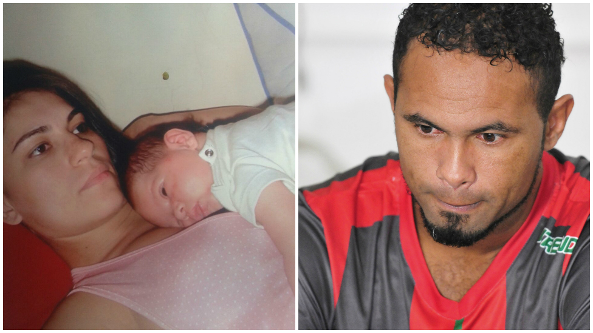
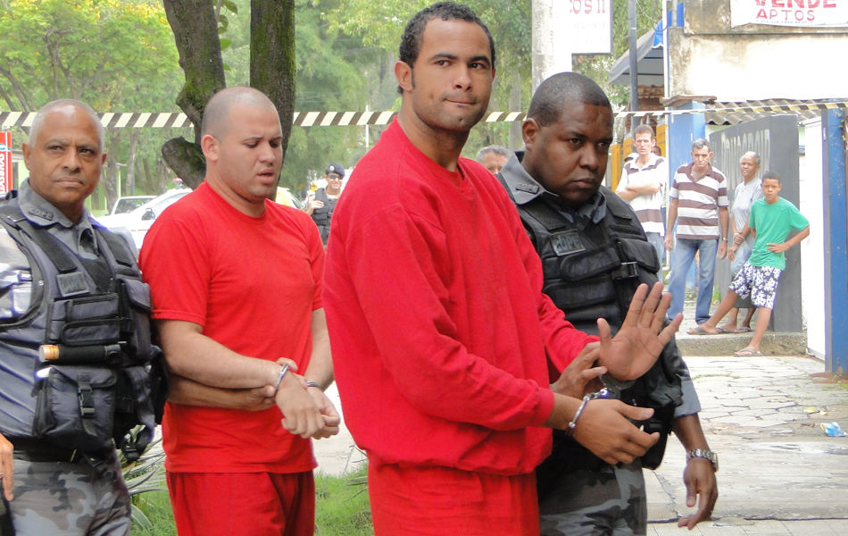
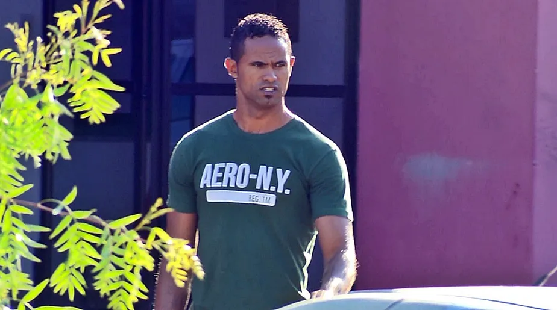

O CASO
Eliza Silva Samudio, 25 anos, modelo, nasceu em Foz do Iguaçu, no Paraná, e posteriormente se mudou para São Paulo e depois para o Rio de Janeiro. Em 2009, ela conheceu Bruno Fernandes das Dores de Souza, que naquele momento vivia o auge de sua carreira como goleiro do Flamengo. Pouco tempo depois, Eliza descobriu que estava grávida e afirmou que Bruno era o pai da criança.

Eliza Samudio e Bruno mantinham uma relação conturbada após Eliza afirmar que ele era o pai de seu filho, o que Bruno negava.
Após engravidar, Eliza entrou na Justiça pedindo reconhecimento de paternidade, e em outubro de 2009, registrou Boletim de
Ocorrência contra Bruno por agressão, e coação para abortar.
O laudo do IML apontou vestígios de agressão. Em junho de 2010, Eliza saiu do Rio de Janeiro para Minas Gerais e desapareceu.
Investigações concluíram que Eliza foi assassinada no sítio do jogador em (MG). O corpo nunca foi encontrado.
O nascimento da criança e os conflitos anteriores entre Eliza e Bruno acabariam se tornando elementos importantes para a
investigação iniciada após o desaparecimento dela, em junho de 2010.
Investigação iniciada após o desaparecimento de Eliza, em junho de 2010.
Em 4 de junho de 2010, Eliza deixou o hotel acompanhada do filho. Segundo a investigação, ela teria seguido para Minas Gerais
em um veículo conduzido por Luiz Henrique Ferreira Romão, conhecido como Macarrão, amigo e funcionário de Bruno. Um adolescente
também teria participado do deslocamento.
Após chegar a Minas Gerais, Eliza teria sido levada para diferentes locais. A investigação posteriormente apontou que ela teria sido
mantida em cárcere privado antes de ser assassinada. O corpo, porém, nunca foi localizado.
O desaparecimento começou a chamar a atenção de familiares e das autoridades. Durante as investigações, a polícia reuniu depoimentos,
documentos e outros elementos que apontavam para a participação de diferentes pessoas no crime.
em 26 de junho, o filho de Eliza foi localizado na casa de terceiros. A partir daquele momento, as investigações ganharam ainda mais
repercussão nacional e passaram a envolver diretamente Bruno e pessoas próximas a ele.
Bruno foi preso em julho de 2010, juntamente com outros suspeitos. A investigação sustentava que o goleiro teria participado do
planejamento do crime e que Eliza teria sido morta em decorrência dos conflitos relacionados à paternidade e à relação entre os dois
Bruno negou envolvimento no assassinato. O caso continuou sendo investigado e posteriormente levado à Justiça. Mesmo sem que o
corpo de Eliza fosse encontrado, o processo avançou com base no conjunto de provas apresentado pela acusação.
Bruno negou envolvimento no assassinato. O caso continuou sendo investigado e posteriormente levado à Justiça.
Em março de 2013, quase três anos após o desaparecimento de Eliza Samudio, Bruno Fernandes foi levado a julgamento pelo Tribunal do Júri de Contagem, em Minas Gerais.
O julgamento começou no dia 4 de março e recebeu grande atenção da imprensa brasileira.
Durante as sessões, foram apresentados depoimentos de testemunhas, elementos reunidos durante a investigação e diferentes versões sobre o que teria acontecido com Eliza.
A acusação sustentava que Bruno havia participado do planejamento do assassinato e que outras pessoas também haviam contribuído para a execução do crime.
A defesa contestou parte das acusações e apresentou sua própria versão dos acontecimentos.
Um dos elementos que chamava atenção no processo era o fato de o corpo de Eliza nunca ter sido encontrado.
Mesmo assim, o processo prosseguiu com base nas demais provas consideradas pelos jurados.
Em 8 de março de 2013, após quatro dias de julgamento, os jurados consideraram Bruno culpado pelos crimes atribuídos a ele.
A sentença estabeleceu uma pena de 22 anos e 3 meses de prisão.
Bruno foi condenado por homicídio triplamente qualificado, além de sequestro e cárcere privado do filho de Eliza e ocultação de cadáver.
A sentença considerou que Bruno havia participado do crime como mandante do homicídio.
No mesmo julgamento, Dayanne Rodrigues, então ex-mulher de Bruno e também acusada no processo, foi absolvida pelos jurados.
A condenação não encerrou a trajetória judicial do caso. A defesa de Bruno continuou recorrendo da decisão e questionando sua situação prisional.
Nos anos seguintes, diferentes tribunais analisariam os recursos relacionados à condenação e à prisão.
O julgamento de 2013, entretanto, representou um dos principais momentos do caso. Pela primeira vez, um tribunal do júri havia estabelecido uma condenação contra Bruno pelos crimes relacionados ao desaparecimento e à morte de Eliza Samudio.

Pela primeira vez, Bruno é condenado pelos seus crimes
Em 2017, quase sete anos depois da prisão de Bruno, o caso voltou a ganhar destaque devido a uma decisão do Supremo Tribunal Federal.
Naquele momento, a discussão estava relacionada à manutenção da prisão preventiva enquanto recursos apresentados pela defesa ainda aguardavam julgamento.
Em fevereiro de 2017, o ministro Marco Aurélio, do STF, concedeu uma liminar determinando a suspensão da prisão preventiva de Bruno.
A decisão considerou, entre outros fatores, o longo período em que ele permanecia preso preventivamente enquanto aguardava a conclusão de recursos.
Após a decisão, Bruno deixou a prisão. A liberdade, entretanto, não seria definitiva.
O Ministério Público recorreu da decisão e o caso foi levado novamente para análise da Primeira Turma do Supremo Tribunal Federal.
Em 25 de abril de 2017, os ministros da Primeira Turma analisaram o caso.
Por três votos a um, decidiram revogar a liminar que havia permitido a saída de Bruno da prisão.
Com a decisão, a prisão preventiva foi restabelecida e Bruno voltou a ser preso.
O episódio tornou-se mais um capítulo da longa disputa judicial que se desenvolvia desde o desaparecimento de Eliza, em 2010.
Naquele momento, a condenação estabelecida em 2013 permanecia como um dos principais marcos judiciais do processo.
A defesa continuava utilizando os recursos disponíveis para questionar decisões anteriores.
Enquanto a trajetória judicial de Bruno continuava, o paradeiro do corpo de Eliza permanecia desconhecido. Sete anos após seu desaparecimento,
o caso ainda despertava grande interesse público e permanecia marcado pela ausência dos restos mortais da vítima.
O ano de 2017, portanto, representou uma nova etapa na história judicial do caso: Bruno passou brevemente da condição de preso para a liberdade
por decisão do STF e, poucos meses depois, teve sua prisão preventiva novamente determinada.

Bruno passa a cumprir pena em regime semiaberto
Ao longo dos anos, asituação de Bruno dentro do sistema penitenciário foi sendo modificada conforme decisões da Justiça,
até que ele passou a cumprir a pena em regime semiaberto. A partir de 2019, Bruno começou a ter autorização para retomar algumas atividades profissionais.
Nesse período, voltou a atuar no futebol por equipes de menor expressão. Sua tentativa de reconstruir a carreira, entretanto,
continuou sendo acompanhada pela repercussão do caso Eliza Samudio e pelas discussões sobre a possibilidade de um condenado pelo crime voltar a atuar profissionalmente.
Em janeiro de 2023, Bruno obteve o livramento condicional. A medida permitia que ele cumprisse o restante da pena em liberdade,
desde que respeitasse uma série de condições determinadas pela Justiça. Entre essas condições estavam obrigações relacionadas a endereço, horários e deslocamentos.
A concessão do benefício não significava o fim da pena. Bruno continuava submetido às regras da execução penal e poderia perder o benefício caso descumprisse as
determinações estabelecidas pela Justiça.
Nos anos seguintes, ele permaneceu fora da prisão e continuou tentando manter uma carreira relacionada ao futebol. Em fevereiro de 2026, surgiu uma nova tentativa de
retorno ao futebol profissional quando Bruno foi contratado pelo Vasco-AC, do Acre. Ele chegou a viajar para o estado e participou de uma partida pela equipe.
A viagem, porém, aconteceu sem autorização judicial prévia. Naquele momento, uma das condições do livramento condicional determinava que Bruno não poderia deixar o
estado do Rio de Janeiro sem autorização da Justiça.
Em 5 de março de 2026, a Vara de Execuções Penais do Rio de Janeiro revogou o livramento condicional e determinou seu retorno ao sistema prisional. A decisão também
estabeleceu o cumprimento da pena em regime semiaberto.
Após a decisão, Bruno não se apresentou imediatamente às autoridades e passou a ser considerado foragido. Durante aproximadamente dois meses, permaneceu procurado pela
Justiça.
Em 7 de maio de 2026, Bruno foi localizado e preso em São Pedro da Aldeia, na Região dos Lagos do Rio de Janeiro. A prisão foi realizada por policiais militares após i
nformações obtidas pelos setores de inteligência das polícias.
A defesa tentou reverter a decisão que havia revogado o benefício, mas, em setembro de 2026, o Superior Tribunal de Justiça manteve o retorno de Bruno ao regime semiaberto.
A decisão foi tomada pela Sexta Turma do tribunal e manteve a revogação do livramento condicional.
Assim, quase dezesseis anos depois do desaparecimento de Eliza Samudio, a situação de Bruno continua ligada à execução de sua condenação.
O caso, que começou em 2010 e resultou em sua condenação em 2013, passou por diferentes fases judiciais, períodos de prisão, progressões de regime e,
posteriormente, pelo livramento condicional.
O corpo de Eliza Samudio nunca foi localizado, o caso que continua sendo lembrado e discutido no Brasil.
O corpo de Eliza Samudio nunca foi localizado, permanecendo como um dos elementos mais marcantes de um caso que, mesmo após tantos anos, continua sendo lembrado e discutido no Brasil. A ausência de seus restos mortais não impediu que a Justiça julgasse e condenasse os envolvidos a partir do conjunto de provas apresentado durante o processo. Mais de uma década depois do desaparecimento, o caso ainda permanece presente na memória pública. A história de Eliza, Bruno e das demais pessoas envolvidas passou a fazer parte de uma das investigações criminais de maior repercussão no país, atravessando diferentes momentos da Justiça brasileira e gerando debates que ultrapassaram os tribunais.
Evidências

Bruno conversa com seu advogado

Sentença de Bruno

Carta de Macarrão, para Bruno

Carta de Sérgio, primo do goleiro Bruno

Buscas pelo corpo de Eliza
Foto queimada de Bruninho, filho de Bruno